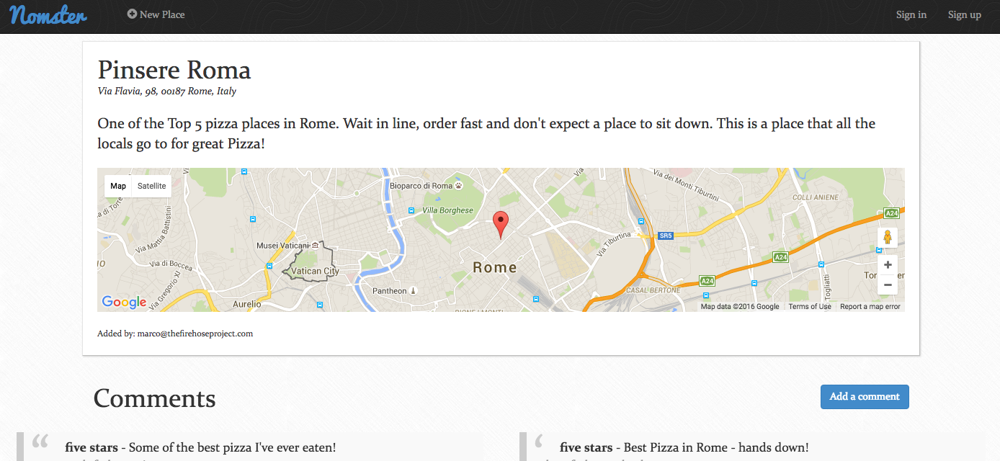

AJ De Groot
Software Engineer | Motion Designer
AJ loves life, animation, and programming.
Code Snippets
Temperature Conversion
This Javascript program will prompt the user for either Clesius or Fahrenheit the user know what the other temperature is.
var readlineSync = require('readline-sync'),
conversions = ['Celcius to Fahrenheit', 'Fahrenheit to Celcius'],
index = readlineSync.keyInSelect(conversions, 'Which Conversion?');
if (index == 0) {
console.log('')
var degrees = readlineSync.question('Enter degrees in Celsius: ');
var degreesNum = Number(degrees);
var degreesFahrenheit = degreesNum * 1.8 + 32;
console.log('It is ' + degreesFahrenheit + ' degrees Fahrenheit');
console.log('')
} else if (index==1) {
console.log('')
var degrees = readlineSync.question('Enter degrees in Fahrenheit: ');
var degreesNum = Number(degrees);
var degreesCelcius = (degreesNum - 32) / 1.8;
console.log('It is ' + degreesCelcius + ' degrees Celcius');
console.log('')
} else {
console.log('Exit')
}#Prompts user for number input and converts to int
puts "Please enter a number:"
user_number = gets.chomp.to_i
#Checks for last two digits
special_exceptions = user_number.abs % 100
#Checks for 11, 12, and 13 due to their odd ordinal nature
if special_exceptions > 10 && special_exceptions < 14
special_numbers_11_12_13 = user_number
else
ones_place = user_number % 10
end
#Assigns ordinal attachment and outputs text accordingly
if special_numbers_11_12_13 == user_number
puts "You picked a silly number, that's the #{special_numbers_11_12_13}th time today!"
elsif ones_place == 1
puts "That's your #{user_number}st bratwurst, yum(:"
elsif ones_place == 2
puts "I know this is your #{user_number}nd time digging a 6 foot hole, but let me lend you a hand"
elsif ones_place == 3
puts "This is the #{user_number}rd bird I've seen in the herd... word."
else
puts "#{user_number}th, that's the where you would place is a pillow throwing contest, dishonor on you and your cow."
endOrdinal Challenge
This ruby program will convert a plain number to the ordinal of the number. So for example, if the user enters 2, it will display 2nd, if the user enters 3, it will display 3rd, etc.
Foobar
This ruby program is an adaptation of a classic technical interview problem which displays sequences of the Foobar pattern.
puts "What number will we be counting up to today?:"
user_number = gets.chomp.to_i
puts "----"
n = 1
while n <= user_number
if n % 5 == 0 && n % 3 == 0
puts "Foobar"
elsif n % 3 == 0
puts "Foo"
elsif n % 5 == 0
puts "Bar"
else
puts n
end
n = n + 1
endWeb Apps
Quote Generator

A database-powered quote generator with a mobile-first design, using the Ruby on Rails framework, HTML, and CSS. Uses Git and GitHub for version control, and launched on Heroku.
Yelp Clone
A Yelp clone that integrates with the Google Maps API and includes features like user comments, star ratings, image uploading, and user authentication.
Two-Sided Market Place

A two-sided, video-streaming marketplace platform that features credit card payment capabilities, user role management, complex user interfaces, and advanced database relationships.
Test Driven Development

An Instagram clone that was built using industry-standard, test-driven development following numerous red/green/refactor cycles.
Single Page Todo Application

This single-page to-do application features a fluid user interface that– by using JavaScript– allows users to rapidly add dynamic content.
Skills & Tools


Contact
Currently entertaining new opportunities. Please get in touch via e-mail: